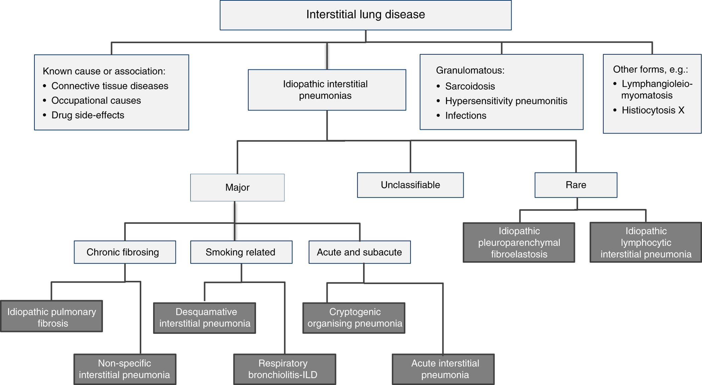
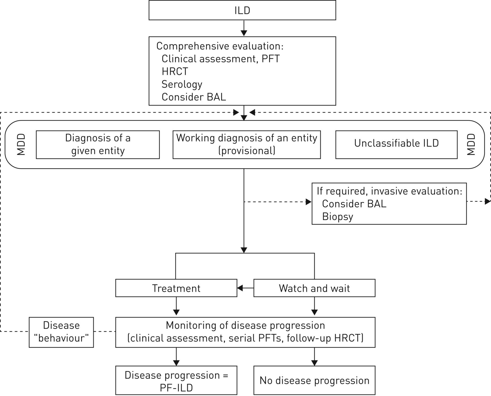

Classification of ILDs
Idiopathic Interstitial Pneumonias (IIPs)
- Major idiopathic interstitial pnuemonias
- Chronic fibrosing
- Idiopathic pulmonary fibrosis (IPF)
- Nonspecific interstitial pneumonia (NSIP)
- Smoking-related
- Respiratory bronchiolitis-interstitial lung disease
- Desquamative interstitial pneumonia
- Acute and subacute
- Cryptogenic Organizing Pneumonia (COP)
- Acute interstitial pneumonia (AIP; Hamman-Rich syndrome)
- Chronic fibrosing
- Rare idiopathic interstitial pneumonias
- Lymphoid interstitial pneumonia
- Idiopathic pleuroparenchymal fibroelastosis
- Unclassifiable
Known Causes/Associations
- Connective tissue disorders
- Rheumatoid arthritis
- Sjogren's syndrome
- Systemic lupus erythematous
- Inflammatory myositis
- Mixed CTD
- Systemic sclerosis
- Interstitial pneumonia with autoimmune features (IPAF)
- Exposure/occupational related
- Hypersensitivity pneumonitis
- Pneumoconiosis
- Drug related
- Methotrexate
- Nitrofurantoin
- Amiodarone
- Bleomycin
Granulomatous
- Sarcoidosis
- Infectious
- Hypersensitivity pneumonitis
Other
- Lymphangioleiomyomatosis
- Langerhans' cell histiocytosis
- Pulmonary alveolar proteinosis

Diagnosis and Workup of ILDs
Evaluation
- Family history
- Drugs and radiation exposure
- Inorganic materials: asbestos, mining, sandblasting, etc.
- Organic materials: mould/water damage, birds, farms, feather pillows, hot tubs, etc.
- Connective tissue disease: joints, rash, mechanics hands, myositis, scleroderma findings, CREST, proximal muscle weakness...
Workup
- All patients: ANA, RF, anti-CCP, +/- other serology if clinically indicated.
- consider sending precipitating antibodies for known antigens for HP
- HRCT
- PFTs +/- 6MWT +/- home oxygen assessment
- Consider lung biopsy if needed
- consider respirology +/- rheumatology referral
Non-IPF ILD

References
- Interstitial lung disease | European Respiratory Society
- American Thoracic Society/European Respiratory Society International Multidisciplinary Consensus Classification of the Idiopathic Interstitial Pneumonias | American Journal of Respiratory and Critical Care Medicine
- Interstitial Lung Disease in 2020 - Clinics in Chest Medicine
- https://www.thoracic.org/statements/insterstitial-lung-disease.php
- Cottin V, Hirani NA, Hotchkin DL, et al. Presentation, diagnosis and clinical course of the spectrum of progressive-fibrosing interstitial lung diseases. European Respiratory Review. 2018;27(150). doi:10.1183/16000617.0076-2018
- IMR Slides 2021